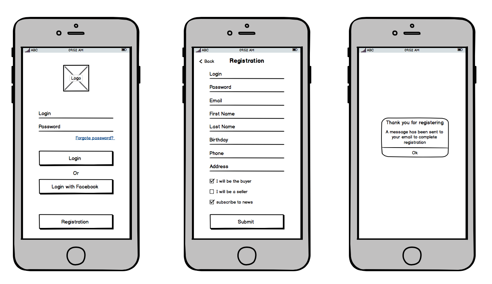

Wireframe
A wireframe is a basic, two-dimensional visual representation of a web page, app interface, or product layout. You can think of it as a low-fidelity, functional sketch. Wireframes typically depict only functionality, not the true style and visual elements of the final product.
Wireframes